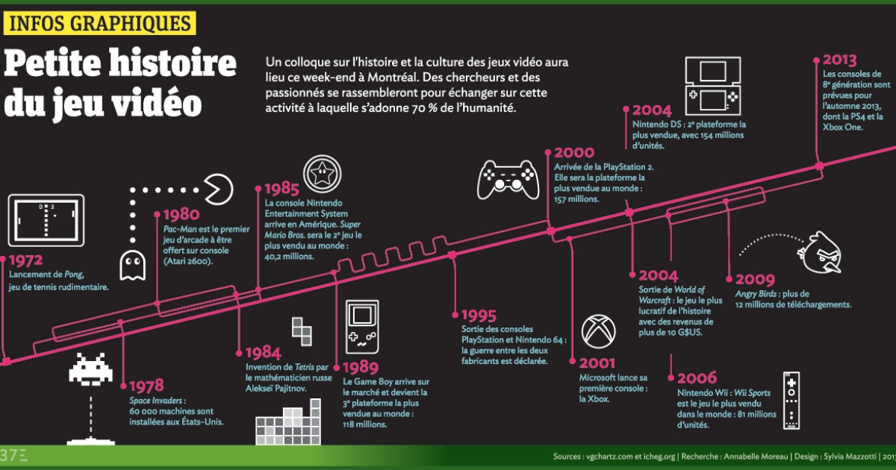

Qu'est-ce que le jeu vidéo
Un jeu vidéo est un jeu électronique doté d'une interface utilisateur permettant une interaction humaine ludique en générant un retour visuel sur un dispositif vidéo. Les systèmes électroniques utilisés pour jouer à des jeux vidéo, aussi appelés plates-formes, peuvent être aussi bien des ordinateurs de bureau, des appareils spécifiques comme des consoles de salon ou des bornes d'arcade, ou de petits appareils portatifs tels des consoles portables, des ordinateurs portables ou des smartphones.
Origine du jeu vidéo
L'histoire du jeu vidéo débute dans les années 1950, où l'idée du jeu vidéo naît au sein des universités lors de recherches sur l'informatique. Les jeux vidéo ne se font connaitre du grand public qu'à partir des années 1970 avec la commercialisation des premières bornes d'arcade ainsi que les consoles de jeu vidéo, pouvant faire tourner une dizaine de jeux simplistes. Depuis, le secteur du jeu vidéo est en croissance continue et, à partir de 2002, son chiffre d'affaires mondial atteint 10 G$, dépassant celui d'Hollywood.
Le jeu vidéo en 2022
Les genres
- Action
- Aventure
- Jeux de rôle
- Réflexion
- Stratégie
- Sport
Esports
Esports, abréviation de sports électroniques, est une forme de compétition utilisant les jeux vidéo. L'esport prend souvent la forme de compétitions de jeux vidéo multijoueurs organisées, notamment entre joueurs professionnels, individuellement ou en équipe. Bien que les compétitions organisées fassent depuis longtemps partie de la culture du jeu vidéo, elles se sont déroulées en grande partie entre amateurs jusqu'à la fin des années 2000, lorsque la participation de joueurs professionnels et le nombre de spectateurs à ces événements via la diffusion en direct ont connu une forte augmentation de popularité. Dans les années 2010, l'esport était un facteur important dans l'industrie du jeu vidéo, de nombreux développeurs de jeux concevant et finançant activement des tournois et d'autres événements.